Pomodoro timer · Mac, iPhone & Android
Focus that feels calm.
Breaks that move you.
A minimalist focus timer with guided stretch breaks, ambient sounds and simple stats. Loved by over 240,000 people since 2020.
Free to download · No ads · Foca Plus optional
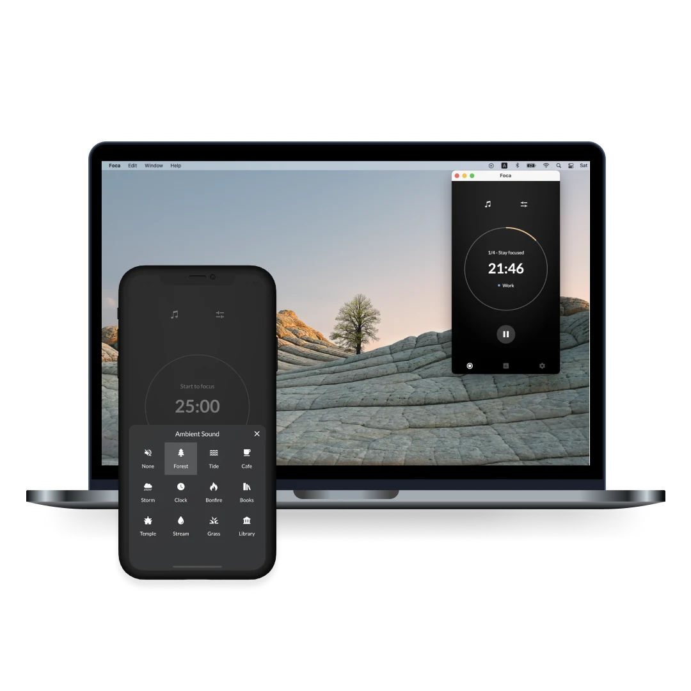
01 · Focus
One ring. One task.
Nothing else on screen.
Set your session, tag it with a category and start. Auto-Run keeps rounds going without tapping back in, and ambient sounds — forest, tide, café, bonfire — help you settle.
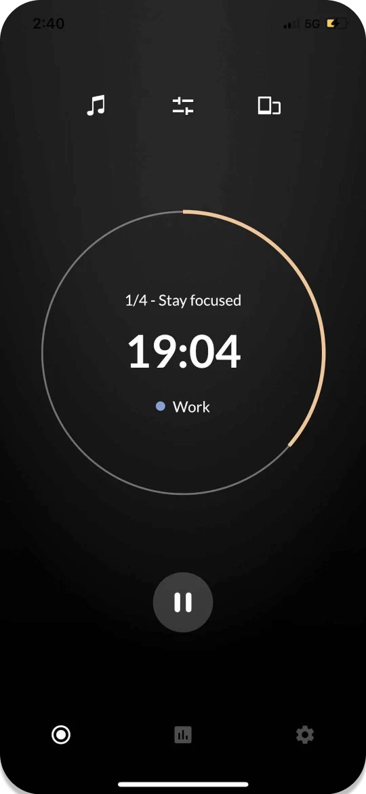
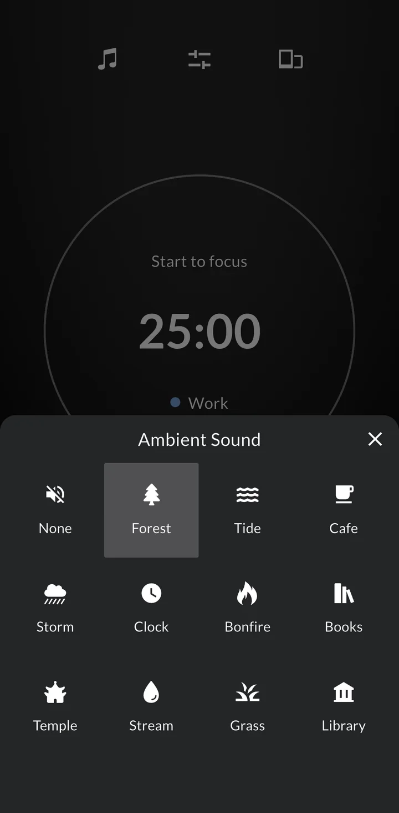
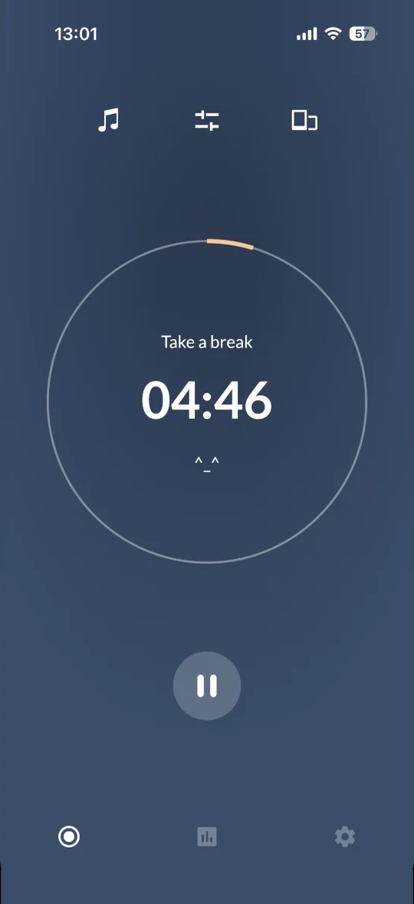
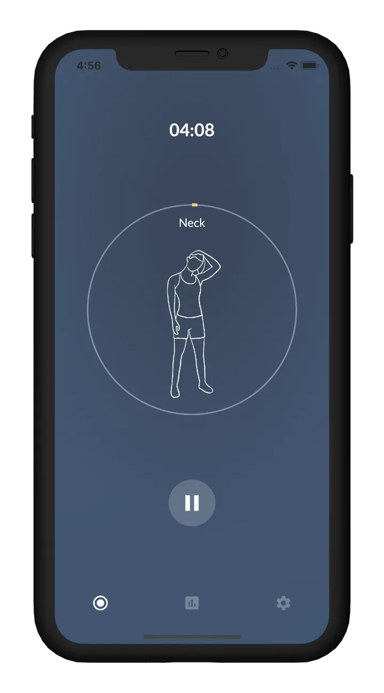
02 · Break
Breaks you actually take.
When a session ends, Foca walks you through a short stretch for your neck, shoulders, back, hands or legs — with illustrations and voice guidance.
03 · Review
See where your time went.
Daily and weekly focus time, plus how it splits across your categories — Work, Study, Writing, Reading and more.
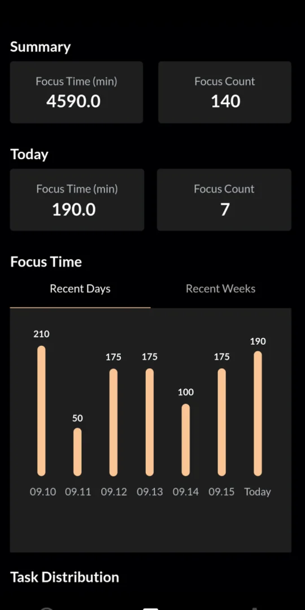
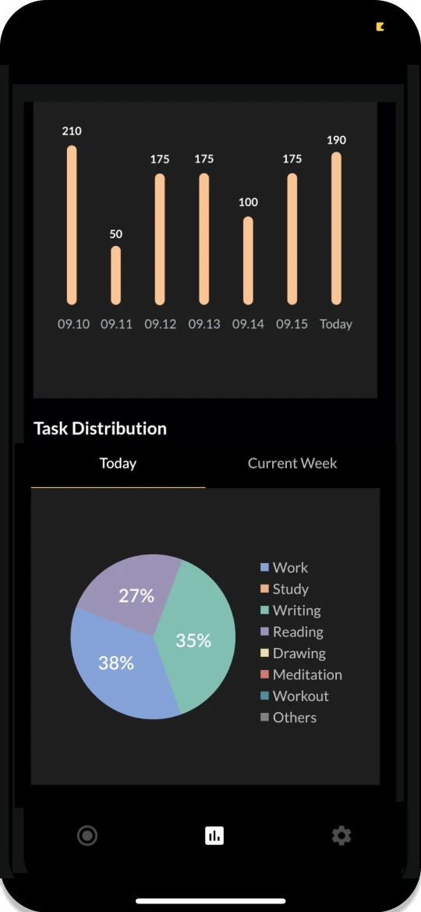
Loved by users and creators
“I haven't seen such a simple and aesthetic app until now. I liked the idea of adding a short exercise tutor as a mood refreshment.”
“Was looking for an alternative to the popular Forest timer app and found Foca!”
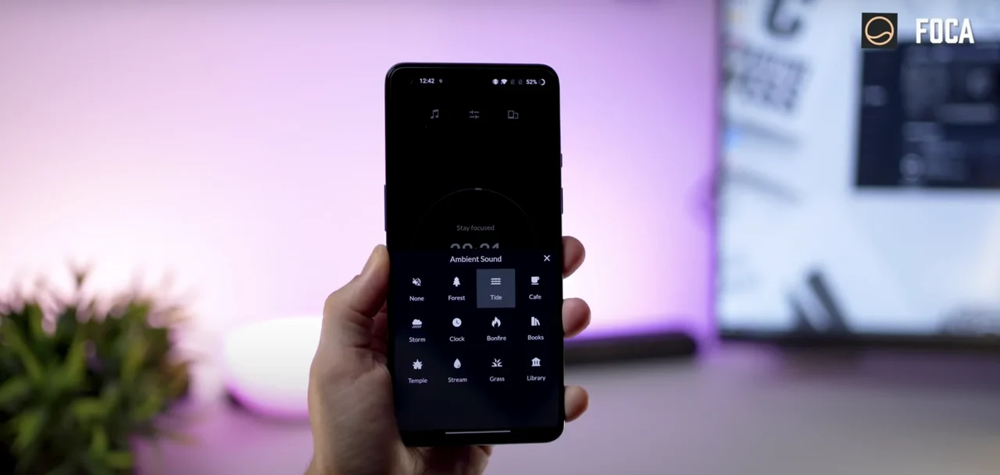
Featured on YouTube “Top 7 Must Have Android Apps” mobiscrub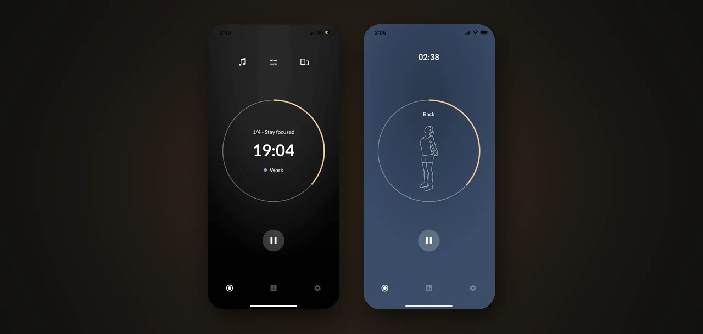
Featured on YouTube “How to Use Foca: Pomodoro Focus Timer App” iKsuraj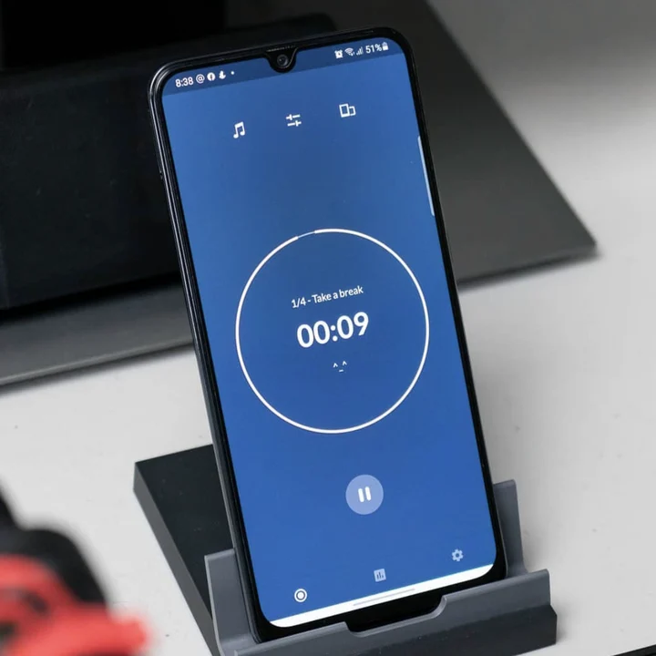
Featured on Instagram “Reintroducing the Pomodoro technique to my workflow” @earlmalaki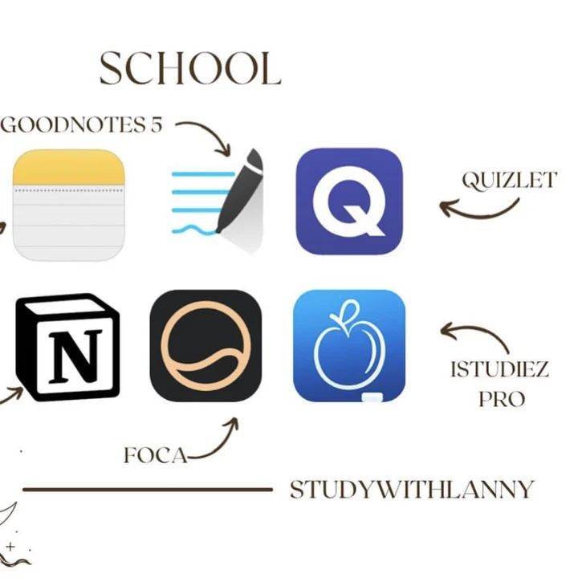
Featured on Instagram “My favorite apps for school” @studywithlannyAlso from Foca Studio
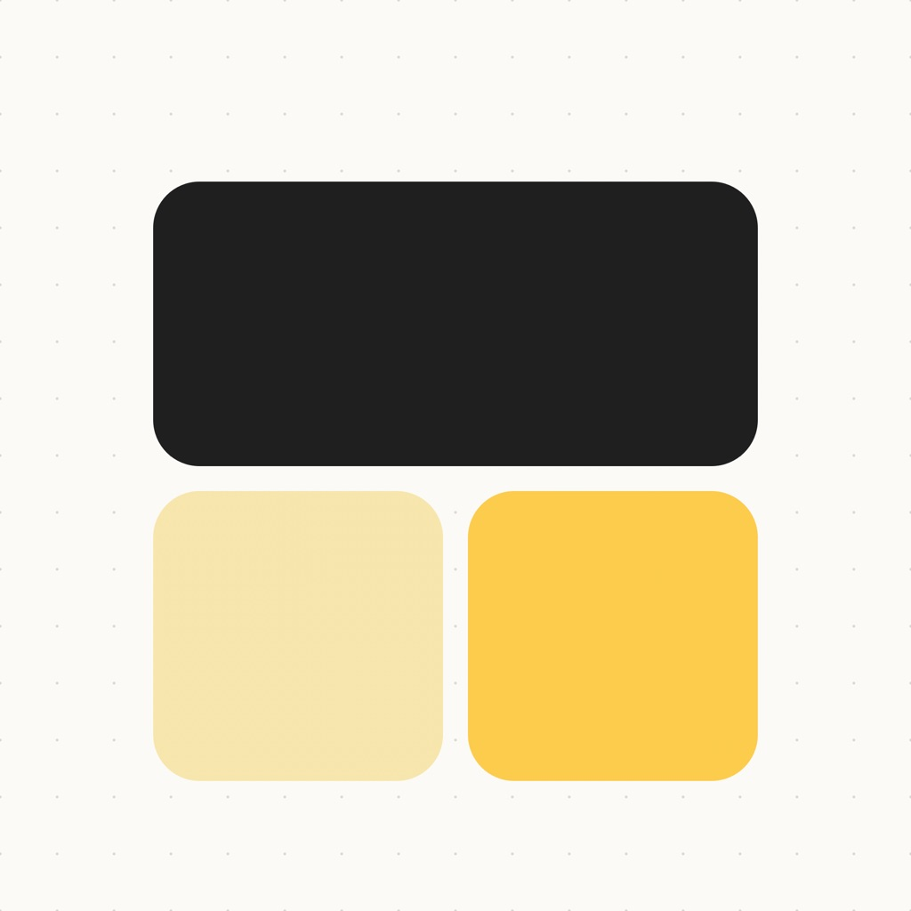
DayfoldCountdown widgets · iPhone Fold a page.Remember a day.
Birthdays, anniversaries and countdowns as Moment cards on your Home and Lock Screen.
Meet Dayfold → CoreInterval timer · iPhone Work. Rest.Repeat the round.
Tabata, boxing and circuits with audio cues and workout history.
Meet Core →Two people, three apps.
Foca started in 2020, when we were both working from home — distracted, and stiff from sitting all day. We built the timer we wanted: Pomodoro plus a stretch. Dayfold and Core came from the same idea — small tools, made carefully.
Frequently asked questions
What is Foca Studio?
Foca Studio is an indie app studio founded by Yating Lu. It builds simple, ad-free apps for focus, meaningful dates, and workouts — starting with Foca, Dayfold, and Core.
What is Foca?
Foca is a minimalist Pomodoro focus timer for iPhone, Mac, and Android. It combines customizable focus sessions, calming ambient sounds, guided stretch breaks, Auto-Run mode, and focus statistics — without ads.
How is Foca different from a basic Pomodoro timer?
Beyond a countdown, Foca adds ambient sounds, guided stretch breaks during rests, Auto-Run so sessions continue without tapping back, custom focus categories, and weekly statistics so you see where your time went.
Does Foca include stretch breaks?
Yes. When a focus session ends, you can follow guided stretches for neck, shoulders, back, hands, legs, or full body, with illustrations and voice guidance.
Is Foca available on iPhone, Mac, and Android?
Yes. Foca is available for iPhone and Mac on the App Store, and for Android on Google Play. Dayfold and Core are available for iPhone.
What is Dayfold?
Dayfold turns meaningful dates into countdown and anniversary cards with Home Screen and Lock Screen widgets, optional reminders, and yearly repeats for birthdays and anniversaries.
What is Core?
Core is an interval and HIIT workout timer. Set work, rest, and rounds for Tabata, boxing, circuits, and similar training, with audio cues and workout history.
Are Foca Studio apps ad-free? Do you collect my data?
Foca is ad-free. Dayfold stores moment content locally on your device and does not require an account. Check each app’s App Store privacy label for the latest practices. Optional Pro / Plus unlocks are in-app purchases.
Using Foca on Android? Notification and background steps are in the help center.